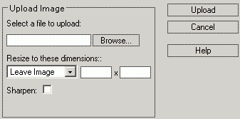

To insert an image into the web page, you should first
upload it to the remote server.

Write the file's local path or use the Browse button to navigate through local folders and select the file.
Use the dropdown menu to select some hardcoded dimensions for the picture. To keep the image's original size, select "Leave Image". You can also choose one of the predefined resize values or manually edit the values into the fields (by selecting the "Custom" option). The resizing is done by maintaining the aspect ratio, such that the image will fit into a rectangle with the specified dimensions. This means that sometimes, one of the dimensions will have to be recalculated, according to the value of the other. You can also activate the "Sharpen" option (not supported by all servers).
Finally, click the Upload button to confirm your selection.